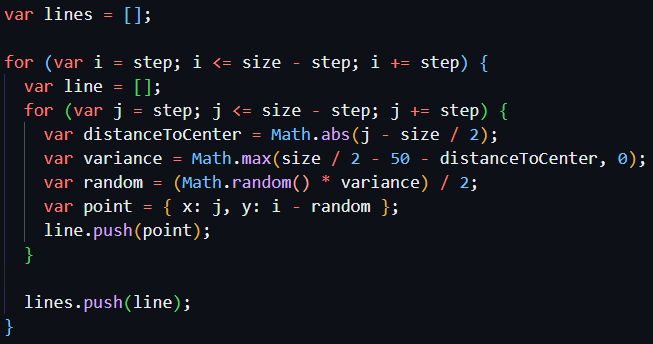
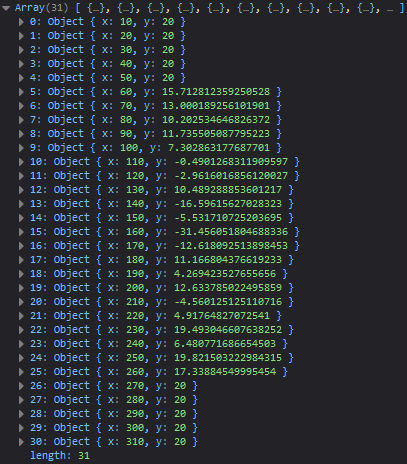
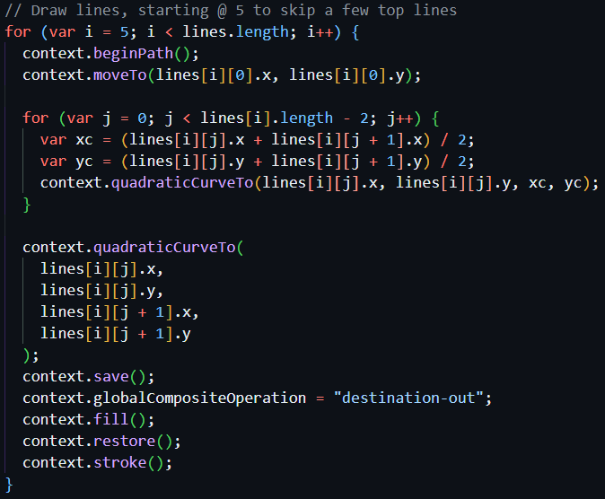

Joy Division
For an explanation of the canvas setup, see my maze explanation.
We start with an empty array named lines, and in this array we're going to push a bunch of points.
Since our size is 320 and our step is 10, the loop runs 32 times. var line represents a horizontal line made up of points. Each point on the same line has an x value incremented by 10, and a relatively constant y value that starts to vary when the line is closer to the middle of the canvas.
Let's look at the second line from the top: i == 20. Here's the line array:
Variance calculation
Without the variance calculation, the line would be a simple flat line, with x points incrementing by 10 and y == 20. Firstly, the distance of the point from the center of the canvas is calculated (e.g., x == 60, distanceToCenter == 100). Then, the multiplier is calculated. The further the point is from the center, the smaller the multiplier will be. If the calculation result is negative, Math.max() will choose 0 as the multiplier, and there will be no variation. Finally, a random value is generated that will be subtracted from the y value of the current point, to create the variation seen in the line points seen in the above array. We continue to loop until we've generated 31 lines.
Drawing the lines
Again, we use a for loop, and here we're looping through each line in the lines array, starting at the fifth line to leave a gap at the top of the canvas.
context.beginPath() starts a new path for every loop. We also move to the first point in the next line at the start of each loop.
Next, we create another loop, this time to loop through each point in the line we're currently on in the primary loop. For each point, we're creating a quadratic curve. quadraticCurveTo() requires the x and y coordinates of a control point, which determines the shape of the curve, and the x and y coordinates of the end point.
This gets difficult to understand given that we're looping through so many things. Let's look at the first line we see (the 6th line in the lines array) Here's a screenshot of the array of all the points in this line. We're going to look at point 10.

The red dot indicates the control point, and the blue dot indicates a point on the line. In the image, the blue dot isn't perfectly on the line, and this is because as we're creating quadratic curves, the drawn line is curving away from the specific point listed in the array.
In the calculation, the x control point is a point halfway between the current point's x value and the next consecutive point's x value. The y control point is a point halfway between the current point's y value and the next consecutive point's y value.